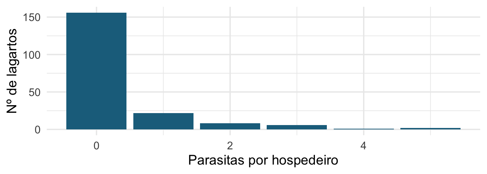
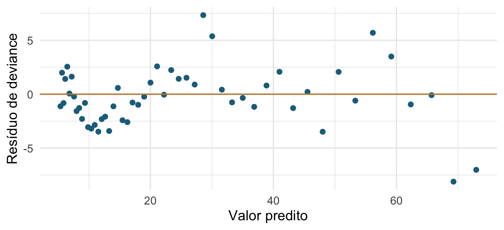
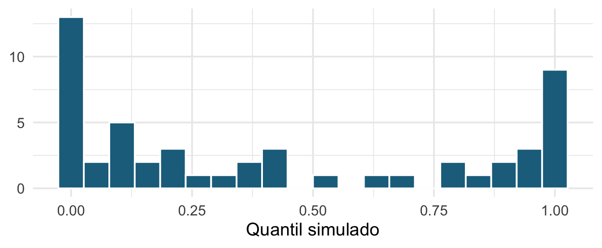
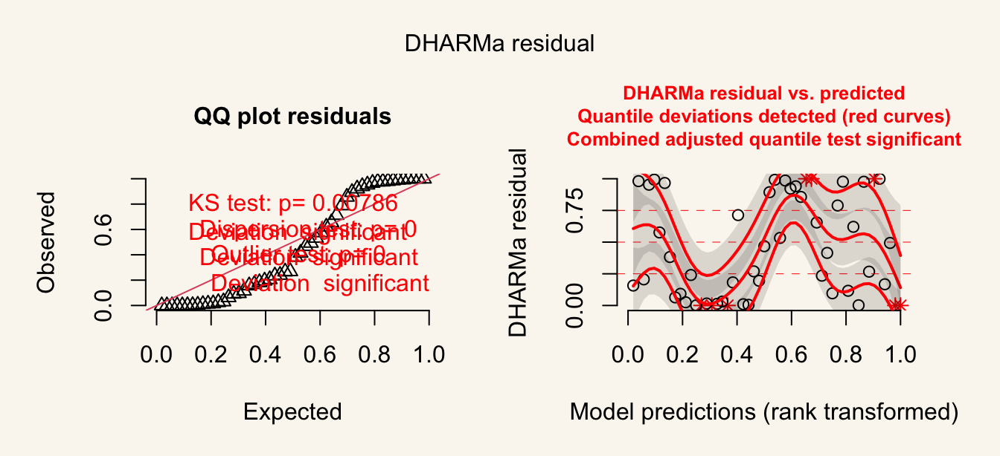
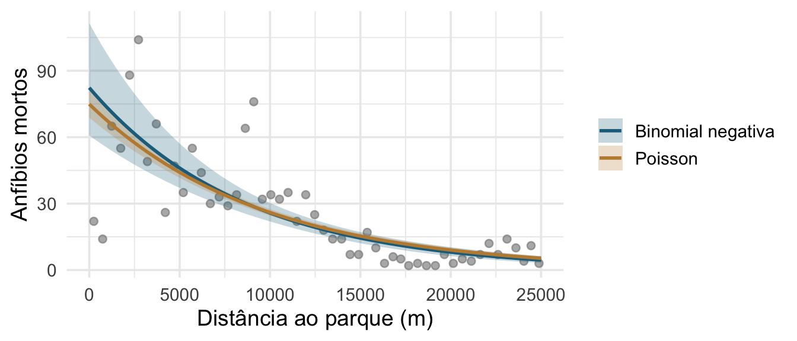
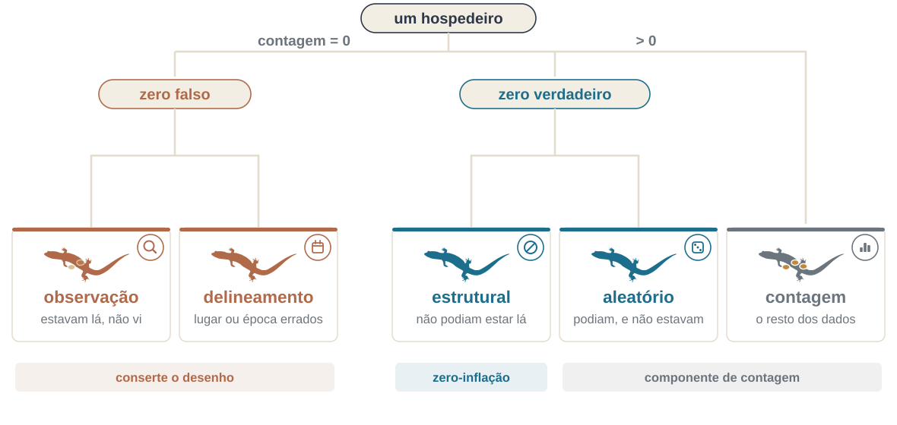
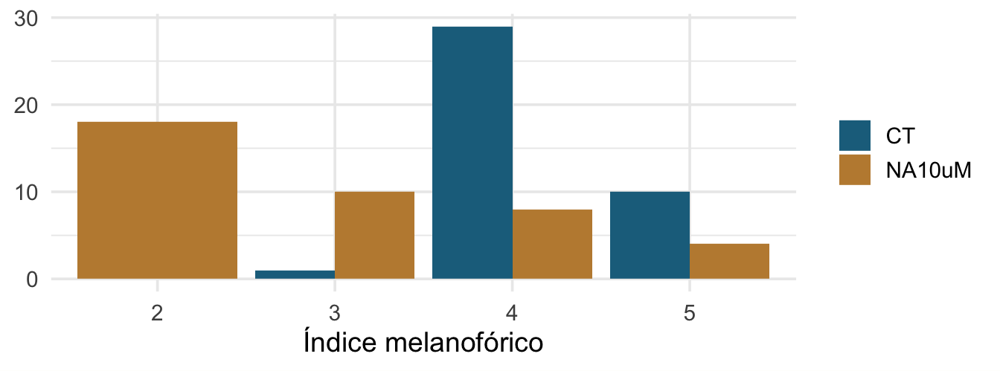

Encontro 6 · Análise de Dados Univariados · PPGBA/UFMS
23 de setembro de 2026
Quando o diagnóstico falha, o ciclo manda voltar aos Dados — e às vezes ao Plano. Excesso de zeros costuma ser um fato sobre a coleta, não sobre o modelo.
deviance gl razao
390.90 50.00 7.82 A Poisson assume variância = média. Aqui a variância é quase 8 vezes maior do que o modelo supõe. Todo erro-padrão do modelo está subestimado, e todo valor de p está otimista.
Esta tarde: como detectar, o que causa, e o que fazer.
DHARMa: resíduos quantílicos simuladosDe volta aos pentastomídeos de terça-feira: Raillietiella mottae em 195 lagartos de duas espécies.

80 % dos lagartos não têm nenhum parasita. Em grupos: de onde vêm esses zeros? Todos significam a mesma coisa?

Esse padrão em faixas é esperado num GLM com contagens baixas: a resposta é discreta. Não dá para julgar se é bom ou ruim só olhando.
| Tipo | Ideia | Problema |
|---|---|---|
| Pearson | \((y - \hat{\mu})/\sqrt{V(\hat{\mu})}\) | distribuição desconhecida |
| deviance | contribuição de cada ponto à deviance | idem |
| quantílico simulado | posição do valor observado na distribuição preditiva | nenhum — é uniforme se o modelo está certo |
A ideia do DHARMa: simule muitos conjuntos de dados a partir do modelo ajustado e veja em que quantil dessa distribuição cai cada observação. Se o modelo está certo, esses quantis são uniformes entre 0 e 1 — seja qual for a família.

Deveria ser plano. O acúmulo nas pontas é a assinatura da sobredispersão: o modelo prevê variação de menos.
DHARMa
Três razões para usar o DHARMa em vez dos gráficos do plot(): funciona para qualquer família, funciona para modelos mistos (Encontros 7 e 8), e devolve testes com valor de p em vez de “parece um padrão?”.
DHARMa nonparametric dispersion test via sd of residuals fitted vs.
simulated
data: simulationOutput
dispersion = 11.132, p-value < 2.2e-16
alternative hypothesis: two.sided
DHARMa zero-inflation test via comparison to expected zeros with
simulation under H0 = fitted model
data: simulationOutput
ratioObsSim = 0, p-value = 1
alternative hypothesis: two.sided
DHARMa bootstrapped outlier test
data: res
outliers at both margin(s) = 8, observations = 52, p-value < 2.2e-16
alternative hypothesis: two.sided
percent confidence interval:
0.00000000 0.01923077
sample estimates:
outlier frequency (expected: 0.00365384615384615 )
0.1538462 DHARMatestDispersion — razão > 1 é sobredispersão; < 1 é subdispersão (mais raro, e também um problema).| Causa | Sinal | O que fazer |
|---|---|---|
| Falta uma covariável importante | resíduo estruturado | incluir a covariável |
| Falta um termo não linear | curvatura no resíduo | poly(), s() |
| Observações agrupadas | grupos com médias distintas | efeito aleatório (E7) |
| Excesso de zeros | pico em zero | ZI ou hurdle |
| Variação genuína além da Poisson | nada acima explica | binomial negativa |
Sobredispersão é quase sempre sintoma, não doença. Trocar a distribuição sem investigar a causa esconde o problema em vez de resolvê-lo.
A razão de deviance do nosso Poisson foi 7,8. Burnham & Anderson tratam esse número como diagnóstico, não como mero fator de correção:
“We might expect \(c > 1\) with real data but would not expect \(c\) to exceed about 4 if model structure is acceptable and only overdispersion is affecting \(c\). Substantially larger values of \(c\) (say, 6–10) are usually caused partly by a model structure that is inadequate.”
Ou seja: 7,8 aponta para a primeira linha da tabela — falta estrutura — antes de apontar para a quarta. Trocar de família conserta o erro-padrão sem consertar o modelo. Voltamos a isso no Encontro 7, quando a estrutura que falta for o agrupamento.
Burnham & Anderson (2002), §2.5, p. 68.
Estimate Std. Error t value Pr(>|t|)
(Intercept) 4.31648 0.11939 36.15590 0
D.PARK -0.00011 0.00001 -8.73472 0Multiplica todos os erros-padrão por \(\sqrt{\hat{\phi}}\). As estimativas não mudam.
Não é uma distribuição de verdade — é um ajuste dos erros-padrão. Por isso não tem verossimilhança nem AIC, o que atrapalha no Encontro 9.
theta razao_deviance
3.68 1.09 AICc dAICc df weight
nb 393.6 0.0 3 1
poisson 634.5 240.9 2 <0.001\(\theta\) controla o excesso de variância: \(\mathrm{Var} = \mu + \mu^2/\theta\). A razão de deviance cai de 7,8 para 1,1, e a binomial negativa fica 241 unidades de AICc abaixo da Poisson — todo o peso de Akaike.
# A tibble: 2 × 4
modelo estimate std.error p.value
<chr> <dbl> <dbl> <dbl>
1 Poisson -0.000106 0.00000439 1.28e-128
2 Binomial negativa -0.000116 0.0000114 1.80e- 24Mesma estimativa, erro-padrão várias vezes maior. A Poisson estava prometendo uma precisão que os dados não têm.

15 minutos.
Na volta: zeros estruturais e zeros amostrais.
Zero amostral — o parasita podia estar ali e não estava, ou estava e não foi detectado. O processo de contagem podia gerar zero, e gerou.
Zero estrutural — o parasita não podia estar ali. O hospedeiro é imune, ou está fora da área de ocorrência do parasita.
A distinção é biológica. Ela decide o modelo, e não há teste estatístico que a substitua.

Esquema próprio, a partir da classificação de Blasco-Moreno et al. 2019. Silhuetas: PhyloPic, CC0.
Zero-inflado (ZIP, ZINB) — uma mistura: com probabilidade \(\pi\) o valor é um zero estrutural; caso contrário vem de uma Poisson ou binomial negativa que também pode gerar zero.
Hurdle, ou zero-alterado — dois processos em sequência: primeiro “é zero ou não é” (binomial), depois “dado que é positivo, quanto” (Poisson ou binomial negativa truncada).
Use hurdle quando todos os zeros têm a mesma origem e você quer modelar presença e abundância separadamente. Use zero-inflado quando acredita que existem as duas origens de zero.
# Check for zero-inflation
Observed zeros: 156
Predicted zeros: 140
Ratio: 0.90A função compara os zeros observados com o número que a Poisson ajustada esperaria produzir. Não é uma questão de opinião sobre “muitos zeros”: é uma comparação com o que o modelo assume.
library(glmmTMB)
ziP <- glmmTMB(Raillietiella_mottae ~ CRC + Sexo * Especie,
ziformula = ~ ., data = parasitas, family = poisson)
ziNB <- glmmTMB(Raillietiella_mottae ~ CRC + Sexo * Especie,
ziformula = ~ ., data = parasitas, family = nbinom2)
hurNB <- glmmTMB(Raillietiella_mottae ~ CRC + Sexo * Especie,
ziformula = ~ ., data = parasitas,
family = truncated_nbinom2)ziformula = ~ . diz “use no modelo dos zeros as mesmas preditoras do modelo das contagens”. No capítulo 8 do livro isso aparece como zi = ~ ., que funciona por correspondência parcial de argumento.
ziformula é um segundo modeloEle estima a probabilidade de zero estrutural, e pode ter preditoras próprias. Frequentemente deve ter outras: a pergunta “por que o parasita não poderia estar neste hospedeiro” não é a mesma que “quantos parasitas há neste hospedeiro”.
O ~ . é um ponto de partida cômodo, não uma escolha automática.
AICc dAICc df weight
ZIP 275.7 0.0 10 0.62
ZINB 277.3 1.6 11 0.28
hurdleNB 279.3 3.6 11 0.10
poisson 320.2 44.6 5 <0.001O ZIP leva 62% do peso, a ZINB 28% e o hurdle 10%. A Poisson simples fica 45 unidades atrás: o excesso de zeros era real. Mas entre os três candidatos nenhum manda sozinho — e a escolha entre ZIP e ZINB volta a ser biológica, não aritmética.
observados esperados_ZIP
156 156 \(P(Y = 0)\) sob o ZIP é \(\pi + (1-\pi)\,e^{-\lambda}\): a probabilidade de ser um zero estrutural, mais a de não ser e ainda assim sair zero.
# Check for zero-inflation
Observed zeros: 156
Predicted zeros: 155
Ratio: 0.99Confira se os dois números batem na sua versão dos pacotes. No ambiente em que estes slides foram testados (performance 0.10.8) eles não batiam: a função reportava os zeros esperados sem levar em conta a parte zi do modelo, e concluía que ainda havia inflação.
Lição geral, que vale além deste caso: saiba o que a função está contando antes de aceitar o veredito.
DHARMa zero-inflation test via comparison to expected zeros with
simulation under H0 = fitted model
data: simulationOutput
ratioObsSim = 1.0028, p-value = 1
alternative hypothesis: two.sidedO DHARMa simula conjuntos de dados a partir do modelo ajustado inteiro, parte zi incluída, e compara a proporção de zeros simulada com a observada. Por ser baseado em simulação, não depende de alguém ter derivado a fórmula certa para cada família.
Estimate Std. Error z value
(Intercept) 3.46085778 2.02383003 1.7100536
CRC -0.05982158 0.04022531 -1.4871625
SexoM -1.10711321 0.54876450 -2.0174651
EspeciePhyllopezus_pollicaris 0.79906460 0.99862455 0.8001652
SexoM:EspeciePhyllopezus_pollicaris 1.49021930 0.77818607 1.9149910
Pr(>|z|)
(Intercept) 0.08725597
CRC 0.13697190
SexoM 0.04364700
EspeciePhyllopezus_pollicaris 0.42361510
SexoM:EspeciePhyllopezus_pollicaris 0.05549365
attr(,"ddf")
[1] "asymptotic" Estimate Std. Error z value Pr(>|z|)
(Intercept) 13.7128613 4.27210534 3.209860 0.001327995
CRC -0.2617157 0.08955219 -2.922494 0.003472408
SexoM -3.1046855 1.86521061 -1.664523 0.096008012
EspeciePhyllopezus_pollicaris 4.0973433 1.64629390 2.488829 0.012816476
SexoM:EspeciePhyllopezus_pollicaris 5.1728391 2.25825139 2.290639 0.021984292
attr(,"ddf")
[1] "asymptotic"A primeira está em log da contagem esperada; a segunda em log-odds de ser zero estrutural. Sinais opostos nas duas não são contradição: uma diz quantos parasitas há onde há, a outra diz onde não pode haver.
Muito “excesso de zeros” desaparece quando você troca Poisson por binomial negativa. A binomial negativa gera mais zeros que a Poisson de mesma média.
Ordem recomendada:
Repare que neste conjunto de dados o ZIP ganha do ZINB por pouco no AIC. Com 80 % de zeros, a inflação é o problema dominante, não a dispersão.
Índice melanofórico: escala de 1 a 5. Não é contagem, não é contínuo — as distâncias entre categorias não são comparáveis.

Assumir que a diferença entre 1 e 2 vale o mesmo que entre 4 e 5 é uma suposição forte, quase sempre falsa, e que você não precisa fazer.
Modelo de odds proporcionais: existe uma variável latente contínua; os limiares entre categorias são estimados; as preditoras deslocam a latente, e o deslocamento é o mesmo para todos os limiares.
Estimate Std. Error z value Pr(>|z|)
2|3 -6.185 0.952 -6.494 0.000
3|4 -4.751 0.813 -5.841 0.000
4|5 -1.073 0.573 -1.872 0.061
TreatmentNA10uM -3.427 0.621 -5.517 0.000
Time1h -2.207 0.701 -3.146 0.002
Time2h -2.819 0.744 -3.788 0.000
Time3h -3.356 0.780 -4.301 0.000Os coeficientes com | no nome são os limiares entre categorias adjacentes; os demais são os efeitos das preditoras.
Cada animal foi medido em vários tempos: as observações não são independentes. O (1 | Animal) é o assunto de amanhã de manhã — e o clmm é a forma padrão de fazer GLMM ordinal, porque nem lme4 nem glmmTMB cobrem bem odds proporcionais.
clmm devolveCumulative Link Mixed Model fitted with the Laplace approximation
formula: Black ~ Treatment * Time + (1 | Animal)
data: mela
link threshold nobs logLik AIC niter max.grad cond.H
logit flexible 80 -39.53 101.07 613(2984) 4.61e-06 5.6e+02
Random effects:
Groups Name Variance Std.Dev.
Animal (Intercept) 7.451 2.73
Number of groups: Animal 10
Coefficients:
Estimate Std. Error z value Pr(>|z|)
TreatmentNA10uM 0.8333 1.3031 0.639 0.522527
Time1h -0.9228 1.3780 -0.670 0.503075
Time2h -0.9318 1.3825 -0.674 0.500333
Time3h -0.9228 1.3780 -0.670 0.503078
TreatmentNA10uM:Time1h -10.1693 2.8920 -3.516 0.000437 ***
TreatmentNA10uM:Time2h -13.1611 3.3510 -3.927 8.58e-05 ***
TreatmentNA10uM:Time3h -16.6791 4.0302 -4.139 3.50e-05 ***
---
Signif. codes: 0 '***' 0.001 '**' 0.01 '*' 0.05 '.' 0.1 ' ' 1
Threshold coefficients:
Estimate Std. Error z value
2|3 -12.314 3.048 -4.040
3|4 -6.974 2.185 -3.191
4|5 1.441 1.317 1.094A premissa de odds proporcionais é que o efeito da preditora é o mesmo em todos os limiares. Se não for, o ordinal permite relaxá-la:
Tests of nominal effects
formula: Black ~ Treatment + Time
Df logLik AIC LRT Pr(>Chi)
<none> -71.054 156.11
Treatment 2 -65.608 149.22 10.891 0.004315 **
Time
---
Signif. codes: 0 '***' 0.001 '**' 0.01 '*' 0.05 '.' 0.1 ' ' 1“Ajustamos um GLM com distribuição binomial negativa e ligação log (
MASS::glm.nb), depois que um modelo de Poisson apresentou sobredispersão (deviance residual / gl = 7,8). O diagnóstico usou resíduos quantílicos simulados (DHARMa, 1000 simulações); não houve evidência de dispersão residual (p = …) nem de excesso de zeros (p = …).”
Repare que o diagnóstico que não acusou problema também é relatado. É o que permite ao leitor confiar no resto.
DHARMa é o padrão.DHARMa::simulateResiduals() no seu GLM de ontem.Leitura: Bolker, B.M. et al. 2009. Generalized linear mixed models: a practical guide for ecology and evolution. Trends in Ecology & Evolution.
Amanhã de manhã: a terceira causa de sobredispersão da tabela — as observações que não são independentes.
DHARMa: residual diagnostics for hierarchical regression models.glmmTMB — modelos mistos generalizados, zeros inflados e dispersão modelada.ordinal: regression models for ordinal data.Análise de Dados Univariados · PPGBA/UFMS · 2026/2